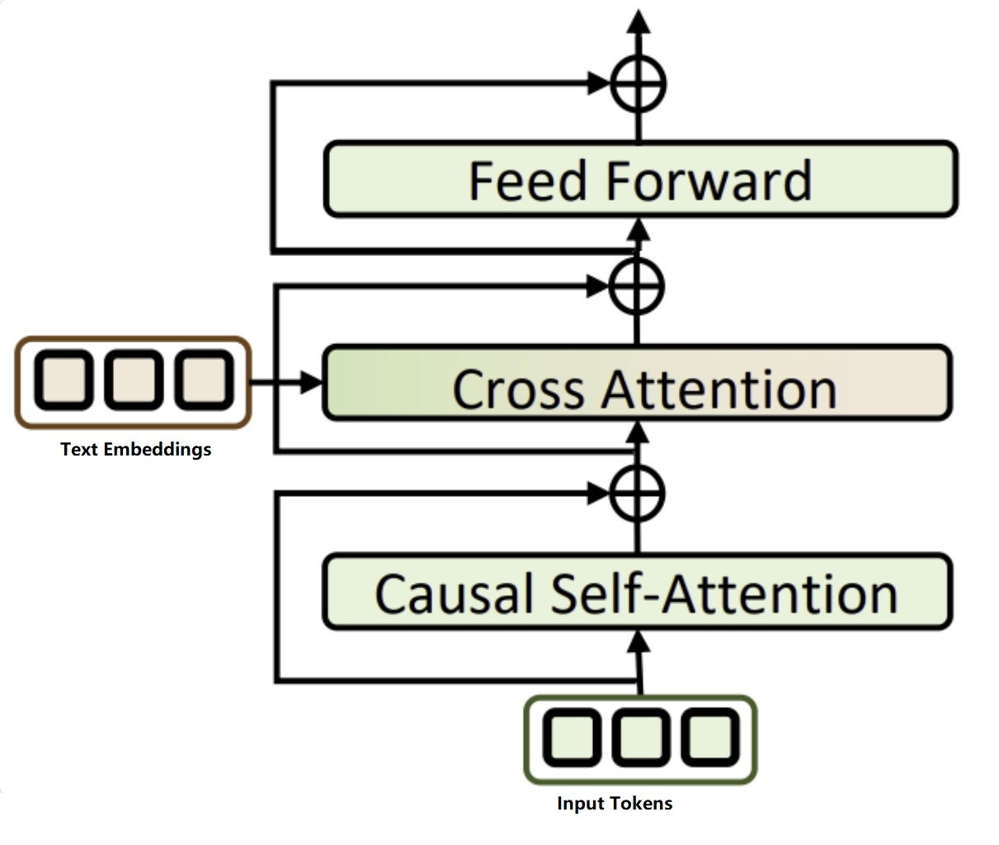

Human Pose Estimation
*In this article, We will introduce the improvements I have leadingly tried on, FYI, they are not all the improvements we have done for the product.
1 Temporal-Aware Text Encoder

in most of the state-of-art models, people used clip's text encoder as the frozen pre-trained text indicator. like MDM, MLM, MoMask, T2M-GPT, etc. the biggest problem of clip's text encoder is in order to aligning text and visual embeeding space, they demaged the sequential information in the global token by emphasized spatio relation information. Images are only containing spatio relation information.
and motion is sequential intense information. it causes a problem that sometime a description contains multiple actions like "a man doing a cartwheel and run away", the model failed to produce the run away part. or in some cases, the model will reverse the action order. by run first then do a cartwheel.
in order to ease such issue. we have tried to replace it with a more powerful text intrepretor like MPNet and also experiment on using full token sequence via cross-attention layer.
after doing so, we can obtain improvements as below
3 LLM+RAG for prompt optimization

in product, users' input is unpredictable. you cannot require users to provide a informative and well organized in detail prompt with no typos. we have pull out some user prompts and analyze the differences between real-world user prompt and ground truth prompts we used to train our model. table 1 showing some examples of the user prompts.
in order to fix such problem, we leverage the power of LLM model, We firstly ask LLM to fix all the typos and translate them to English. Then we use MPNet to convert user prompt to embedding space. and search our vectorDB to find the closest prompt in training data. the vectorDB stored all our vectorized training prompts
We are not trying to make it as a retrieval-like function, so after find the closest prompt we are not replacing it directly. we use it as information to ask LLM rewrite the user's prompt follwoing the same style as the given sentence but the actions need to match the user's given prompt.
after doing so, we can obtain improvements as below
4 RAG during motion Inference
 Figure 1
Figure 1
for a few cases, our model would not understand the prompt action and output not semantically matching motions. in order to reduce such cases happen, we can apply RAG to retrieve a segment of motion as hint for motion generator to generate motion along with that
there are couple combination we need to test for RAG-guided generation. 1.which model we use to do motion retrieval 2.whether we treat the retrieved tokens replacable 3.how should we insert those retrieved tokens
for these questions, we designed our experiments as following: for 1, compare the peformance of using MPNet text-to-text similarity matrix to obtain motion sequence in database, in the other hand, we use tmr's text-to-motion similarity matrix to retrieve motion seuqnece. for 2, make mask matrix accordingly to perform replacable and not replacble and compare their performance. for 3, we make it segment smapling, and interval insert sampling. and use transformed similarity score as the sampling ratio to decide retrieval length.
\[ y = \frac{1}{1 + e^{-k(x - 0.5)}} \]
where \(k\) is constant, \(x\) is similarity score where range is \( [0, 1] \). \(e\) is the base of the natural logarithm
its graph looks like below

We picked the winner of all combination and display its improvement results below.
5 Using beam search on Motion Variant Generation
in product, we provide variant motion generation results, we apply beam search to provide partial variants.
9 Reference
Team, G., Georgiev, P., Lei, V. I., Burnell, R., Bai, L., Gulati, A., Tanzer, G., Vincent, D., Pan, Z., Wang, S., Mariooryad, S., Ding, Y., Geng, X., Alcober, F., Frostig, R., Omernick, M., Walker, L., Paduraru, C., Sorokin, C., … Vinyals, O. (2024, August 8). Gemini 1.5: Unlocking multimodal understanding across millions of tokens of context. arXiv.org. https://arxiv.org/abs/2403.05530
Guo, C., Mu, Y., Javed, M. G., Wang, S., & Cheng, L. (2023, November 29). Momask: Generative masked modeling of 3D human motions. arXiv.org. https://arxiv.org/abs/2312.00063
Zhang, J., Zhang, Y., Cun, X., Huang, S., Zhang, Y., Zhao, H., Lu, H., & Shen, X. (2023, September 24). T2M-GPT: Generating human motion from textual descriptions with discrete representations. arXiv.org. https://arxiv.org/abs/2301.06052
Song, K., Tan, X., Qin, T., Lu, J., & Liu, T.-Y. (2020, November 2). MPNet: Masked and permuted pre-training for Language Understanding. arXiv.org. https://arxiv.org/abs/2004.09297
Petrovich, M., Black, M. J., & Varol, G. (2023, August 25). TMR: Text-to-motion retrieval using contrastive 3D human motion synthesis. arXiv.org. https://arxiv.org/abs/2305.00976